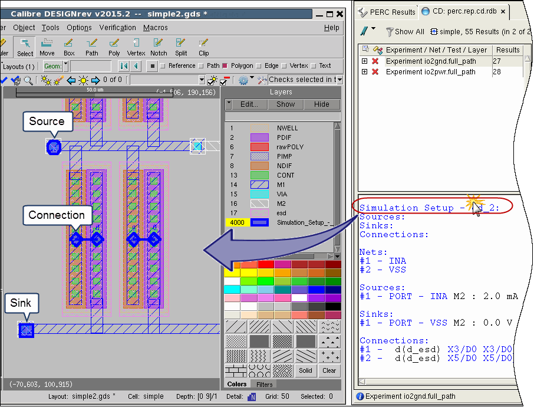

Highlighting LDL CD Simulation Results
Prerequisites
A DFM database containing Calibre PERC LDL CD results. See the perc_ldl::design_cd_experiment command.
(Optional) A Check Text Override (CTO) file with DRC RVE rule check comments to specify layer visibility and other settings. See “DRC RVE Check Text Override File (CTO File)” in the Calibre RVE User’s Manual. Highlight color cannot be specified in a CTO file with Calibre RVE for PERC—it is specified with the toolbar button Setup Highlight color scheme.
The check name for use in the CTO file is <experiment>:<test>, where <test> is typically cd_n, where n is an index. You can use wildcards in the check name in the CTO file; for example: exppwr_cd*. To determine the check name for a result, you can view the first line of the result listing in the Result Data Pane of Calibre RVE.
Video

Procedure
- Set Calibre RVE to cycle highlight
colors. In the toolbar, click the Setup Highlight color
scheme button and choose “Default colors.”

- Click “Simulation Setup” in
the Calibre RVE display to highlight all elements in the result. 
The sources, sinks, and connections are highlighted with the following marker shapes:
Object
Highlight Marker Shape
Source
 Octagon
Octagon Sink
 Square
Square Connection1
 Diamond
Diamond Short Group (not shown)
 TriangleTip
TriangleTipYou can change the marker size. Select , select the Highlighting category, expand the LVS/PERC/PEX Highlighting area, and adjust the setting for “Marker Scale for P2P/CD/LDL results.”